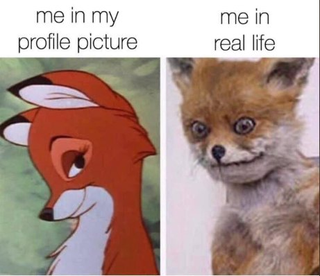

"The human mind is not a debating hall, but a picture gallery."
--Douglas Harding
"Can you imagine a planet where people see images, pictures in their head, and believe they’re real? That’s CRAZY."
--Byron Katie
Think of “the best you.”
Y'know, the social one who comfortably says the right things, the successful one who gets lots done, the creative who produces great stuff, the talented winner of the sport.
The self you want to be. Confidant, unselfish, knowledgeable, articulate, loving. Or whatever.
The ideal self.
See it?
Can you notice that in the mind’s eye, there are images of that best you?
Whenever thinking about who or how you want to be in any situation, those images show up to light the way.
Kind of like an internal pep rally: Be this! You can do it! Yaaaay team!
When you’re evaluating if you’re a good person, or if you’re lovable, or if you did well, those images are the standard by which you judge yourself.
Yep, that's what you're measuring yourself against- mental pictures.
And not just any mental pictures. Idealized mental pictures, of fictional you-perfection.
Pie-in-the-sky portraits of a person.
Who doesn’t exist.
Because let's face it, that person is not you.
That’s why you’re trying so hard, wishing so much, to become that.
So there you are in the middle of every situation, watching and comparing to those very fast, auto-pilot idealized images.
And the constant determination of “Am I doing well?” is based on how closely your behavior and feelings match that exemplary image of supposed-you.
Come close to matching the pictures, and you feel pretty darn good.
Doesn’t seem quite fair though, does it, for the standard of measurement of your value as a person to be riding completely on mentally conceived pixels of perfection.
Because, I mean, idealized.
As in, ideal.
And now think of you as you “really are.” People annoy you, not near enough gets done, you’re not enlightened, you’re bad unlovable inadequate wrong lacking.
Do you notice these are images too?
Images of the opposite of perfection- aka not-ideal, screw-up, you. Clenching in the tennis match, ruining the painting or song, blurting out the wrong thing, snapping at the kids.
Idealized bad, rather than idealized good.
That’s what most folks mean by, “the real me.”
Mental pictures that come with a bad feeling.
Luckily the good news is that neither image- not the good or the bad, the feeling or the no-feeling portrayal- is you.
Because no image is a person.
Yet this is what “liking yourself” comes down to: how closely the portrait of not-enough-you matches the portrait of ideal-perfect-you in any situation.
Comparing one mental depiction to another. Coming close feels good. Nowhere near feels terrible.
Fine. Why does this matter?
Well of course it doesn’t. It can be informative though.
Because a hefty percentage of everyone's suffering- depression, anxiety, and “failure”- is simply this unnoticed comparison
of one idealized image to another idealized image.
One mirage compared to another.
Calling those unnoticed, stylized, mental depictions- “Me.”
The delusion that any picture is “Me” makes for a bunch of unhappy, feeling-inadequate, humans.
Yeah humans aren’t nuts at all.
To be clear though, it’s not like there’s an alternative. This mega-fast comparing cannot be stopped.
Still, simply noticing this images-aren’t-me game might bring a little more sanity, a little less beating-up dislike of the self, a little more acceptance and awareness of all the pretend.
In either idealized direction.
So the next time you feel bad about yourself, watch the images that bubble up.
See what you're comparing yourself to. Look at the I-Should-Be-That images, and the Oh-No-This-Is-Bad images.
Notice that you are indeed comparing them, and measuring yourself by that comparison.
Notice the conclusions about who you are as a person, resulting from this comparing.
And then, notice you are noticing.
Not because it’s necessary.
But maybe because it can feel better to see that the “best-you” goal you’ve been striving for all along
is smoke and mirrors.
Maybe it can feel better to see a mirage for the not-real it is,
Rather than perpetually trying to reach
or become
something which
isn’t there.
The Best You
